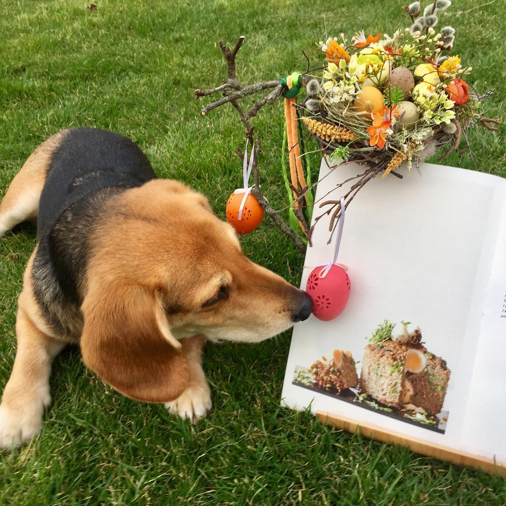

Mäsový nákyp podľa @nestekej_a_jez — Normy Jedál
🐕 Mr. Cuddlo už se těší na velikonoční masový nákyp. Pochutnal by si i váš miláček? Napište nám do komentáře nebo do zprávy svůj email a pošleme vám recept 🐣💛🐰#masovynakyp #nestekejajez #kucharkapropsy #velikonoce